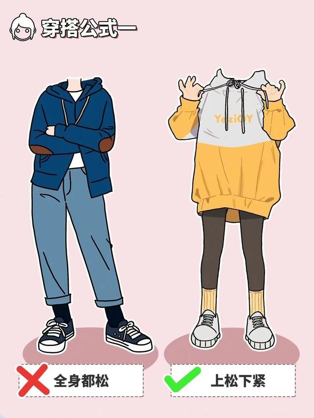
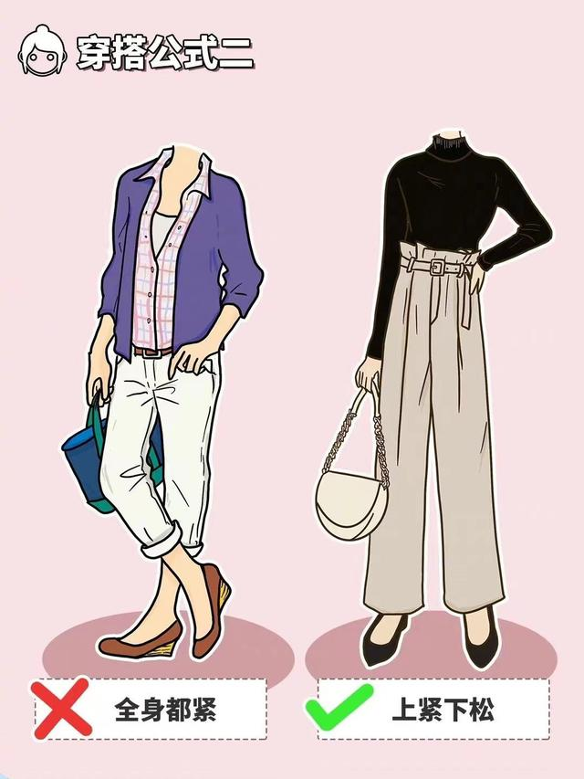
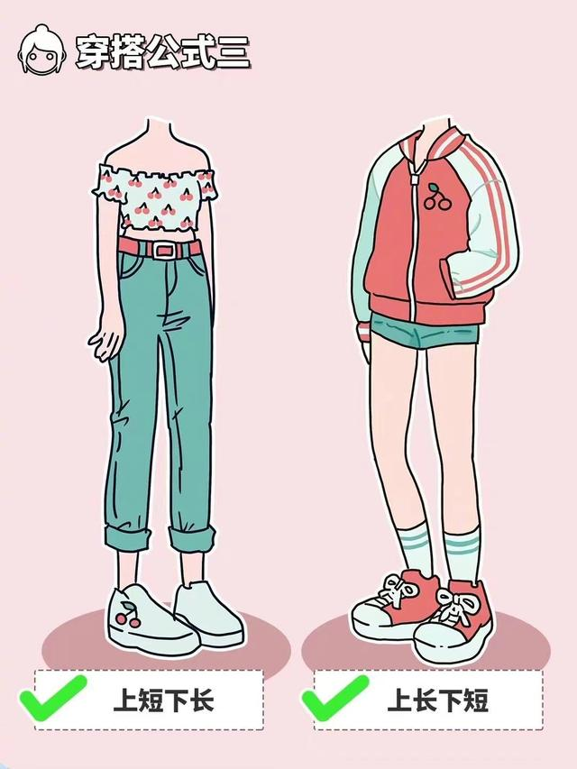
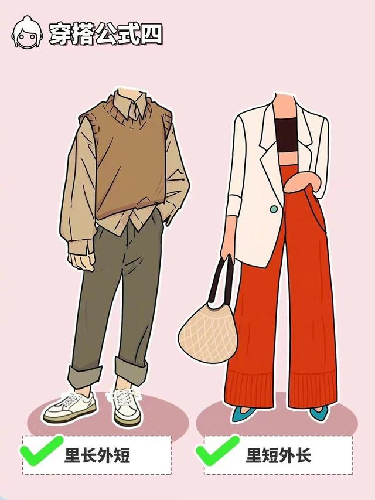
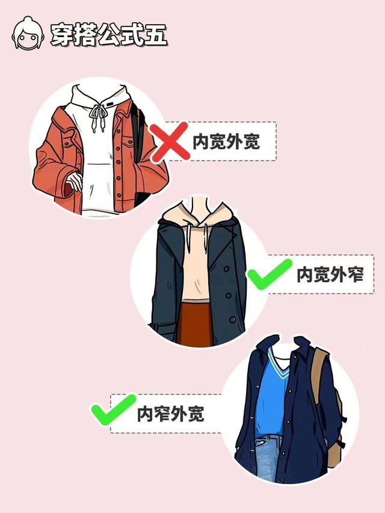
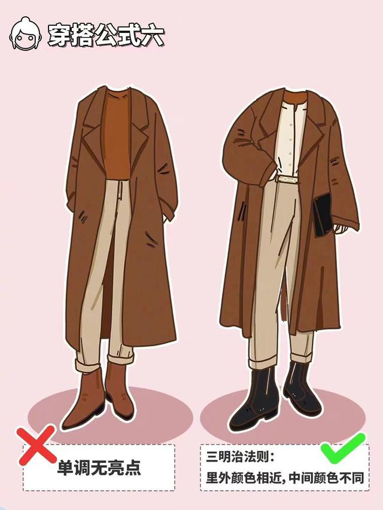
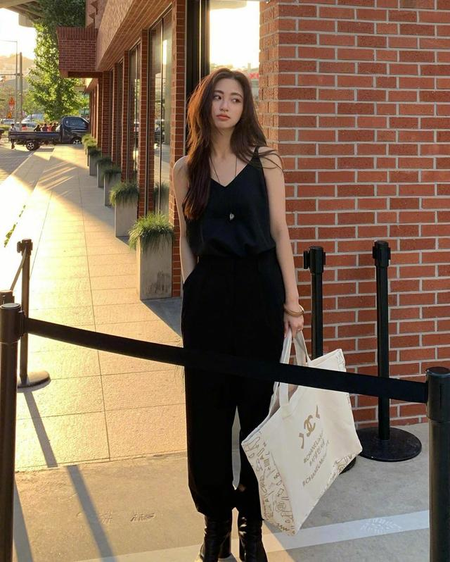
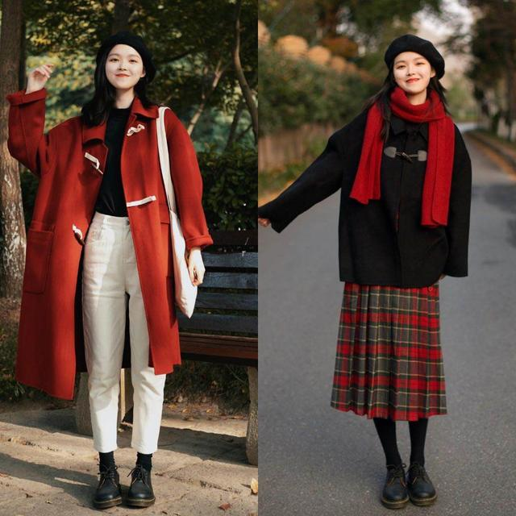

万能穿搭公式

Style1
时尚人员来说，选择一件宽松卫衣搭配健身裤，是今年的最新穿搭法，时髦减龄又时尚。
想要穿出欧美酷帅风，选择一件宽松的西服外套，下面搭配一条紧身的皮裤进行穿搭，也是飒爽有范。
秋冬季选择一件宽松毛衣，下面搭配一条直通裙或者修身裙，这样完美的搭配，也是实现做到了上松下紧的穿搭方式。

Style2
“上紧下松”的搭配方法可以将腿的长度从视觉上拉长，提高整体腰线，彰显很好的身材比例，让整个人更有气场。
在打造“上紧下松”穿搭不能光顾着看服装的松紧度，要注意好服装配色才行。一般情况下，深色服饰的显瘦效果要比浅色服饰好。
不喜欢搭配腰带的女生可以试试收腰效果比较好的高腰长裤，使用高腰长裤搭配修身针织衫，再将修身针织衫的衣摆塞进下装里。

Style3
上短下长穿法法非常广义，可塑性也非常强，对小个子的女生来说它是披着圣母玛利亚光环的“神”，对中等身高的女生来说，它可以极致的、完美的、无可挑剔的展示女性魅力的穿衣法则。
上长下短，就是流行的下衣失踪的穿搭法，也是有着大长腿的完美展现。

Style4
“内长外短”的穿搭，顾名思义就是内搭单品的版型选择偏长一些，外搭的版型更短一点。这样就会让单品层次感分明，造型立体而有效果。
“外长内短”的穿法，同样是一种比较时髦显高的风格。长款的大衣拉风有范，内搭可以选择宽松的毛衣，或者修长的连衣裙，都可以突显出优雅的女人味。如果是搭配经典的黑色百褶裙，也是比较浪漫飘逸的，穿起来精致优雅女人味十足。

Style5
关于全部上半身来说，考究内宽外窄、内窄外宽的搭配方法能够或许在视觉上看上半身加倍的调和同一，显瘦而不痴肥。
若选定表里都宽的穿搭则会给人一种敦实厚重感，一样避让表里都窄才会让穿搭更好。

Style6
第一步确定整体穿搭风格，先确定今天的风格韩系日系气质温柔等等确定风格后选择搭配的单品。一定要和主题风格一致，切记不要各种风格混搭在一起。
（参考色轮搭配）同色系穿搭:30度，简单高级
对比色穿搭:120度，层次渐变感
互补色穿搭:180度，个性亮眼
温馨提示:避开色轮里160度穿搭，极易出错！
春季穿搭
无论是在哪个季节里，女生都要为穿衣打扮而奔波，就算是再设计简洁的衣物，通过合适搭配手法，也可以变得时髦大方起来，由此可见，搭配技巧不仅能够为我们节省时间和精力，还有利于展现身材和气质让我们自身魅力得以提升。如今正值春季，可以在穿衣打扮上更显无拘无束，很多轻薄衣服都可以利用起来，沉寂一季的衣物又能焕发生机，今天通过这位穿搭博主，为大家展现新潮春季穿搭，只需几个技巧，连搭配小白也能寻得搭配窍门，收获变得时尚高级的打扮捷径。
①搭配增添休闲感
第一眼可以发现是设计较为简洁的衣物，很多甚至是基础款，组合起来却一点不平凡，屡屡让人感到惊艳，而且耐看大气，一点也不哗众取众，奇装异服，显然是经得起观赏和大众审美考验；
搭配衣物时，如果想整体效果更好，连身材比例也一同展现，最直接方式就是采用上短下长衣物进行搭配，因为腰腿之间达成完美比例很重要，无论是小个子还是高个子，搭配时都要点明身材比例，而这一点，上短下长穿衣方式就恰好能办到。
②柔和配色温柔大方
步入春天气候适宜，直接选择三件套挥着两件套就可以轻松出门，如果想搭配起来效果更协调，不用在配搭上考虑太多方面，不妨像她这样选择时髦套装进行搭配；一说到套装很多女生心中必然浮现黑色西装+白色衬衫+黑色下装这种传统配搭手法。
随着时尚潮流发展，如今的套装早已更新换代，变换了颜色和设计，在搭配上也更自由，淡雅柔和浅卡其，让硬朗套装效果得以缓解，也显得更中性化或有女人味，内搭除了白色衬衫之外，还可以配上复古印花衬衫、青春休闲T恤，以此增强时髦减龄效果。说起衣物配色问题，这也是穿搭上需要注意的重要方面，因为衣物会凭借自身色彩感，率先吸引别人注意，从而衬托肤色、突显风格和衣物细节设计，所以不是简单堆砌自己喜欢的颜色就可以，最关键还是要适合自己；
搭配时要遵循全身颜色不超过三种的大前提，一旦颜色过多会显得难以驾驭和让人感到繁杂花哨，首推还是淡雅柔和配色，因为穿起来对肤色不会太挑剔，而且衬得人更大方得体，透过同色系、邻近色，以及深浅结合三个方式，造型效果会更吸引人。
夏季穿搭
夏季穿搭，要知道穿出“清凉感”的方式不仅仅是秀身材，其实冷淡风的穿搭，即使遮掩大部分的身材，清凉气质却能扑面而来。
简约冷淡风穿搭，自然是很考验衣品的。当然想要穿好这种风格，并不需要你疯狂补课，只要了解以下3点，就能穿出身材挺拔，高级感无处躲藏的look。
1.极简主义的单品所拥有的特质
2.哪些主打色能够穿出冷淡气质
3.如何让极简穿搭摆脱单调无趣感
①弱化性别的风格
冷淡风服装偏好：中性风设计。线条走向利落大气的通勤单品，就可以穿出冷静克制的氛围感。当然冷淡风穿搭并非是通勤单品的相互碰撞。正确的打开方式是，将女性魅力与冷淡克制融合，穿出慵懒清冷的feel，日常职场都分外迷人！
②删除多余的设计与元素
冷淡风设计偏好：纯色、简约。多余的设计与元素，会赋予服装强烈的风格属性，演绎极简冷淡风反而更有难度。比如说，夏季人手一件的白T，选择字母印花装饰，看上去更加个性前卫，与通勤单品混搭，造型依旧很潮！
③选择清冷感的色系
清冷氛围感的颜色：黑、白、灰、卡其等中性色。没有性别之分的颜色，很容易满足冷淡风极简、克制的穿搭氛围。而少了份感性，多了份理性的基础色，更是没有“过时”的烦恼，让人几乎无法拒绝。

秋季穿搭
①服饰选“长”不选“短”
可以用来打造秋季穿搭的服饰有很多，绵绵建议大家在打造秋季穿搭的时候遵循选“长”不选“短”的搭配方式。这样打造出来的秋季穿搭遮肉效果会变得 更好，而且还可以突出女人的优雅气质。长款服饰也可以强调身材优势，同样可以穿出扬长避短的效果。
对于身材比较好的女生来说，七分长裙和九分长裤都是不错的选择，使用这些服饰搭配短款宽松上衣，既不会穿出瘦过头的感觉，又可以提升穿搭优雅感。短款上衣搭配长裙或者长裤之后，身材比例会得到调节，这样的穿搭显瘦效果和显高效果都是一等一的好，所以不需要担心宽松服饰穿上之后会出现臃肿感。
短款上衣搭配长裙或者长裤之后，身材比例会得到调节，这样的穿搭显瘦效果和显高效果都是一等一的好，所以不需要担心宽松服饰穿上之后会出现臃肿感。
②深浅配色分层次
打造穿搭除了要选对款式之外，还要注意服装配色的选择。深浅不同的服饰穿上之后呈现出来的美感是完全不同的，两者配合可以轻而易举的将层次感穿出来，让穿搭的时尚感提升一个阶级。深色服饰可以放在上半身提亮面部肤色，浅色服饰则可以用在其他部位点亮穿搭，穿出显白且有活力的感觉。

冬季穿搭
想要打造出高级的冬季穿搭，首先要做的就是在保证其保暖效果的同时，让穿搭拥有更高的辨识度。这样的穿搭不仅容易彰显气质，而且还可以穿出潮流感。
①高舒适度外套+长款下装
打造冬季穿搭大家需要做的并不是刻意强调身材优势，而是使用舒适度较高的服饰打造穿搭，穿出自然、大气的感觉。想要提升穿搭舒适度，学会挑选外套是一件很重要的事情。建议大家使用羔羊绒、针织开衫等外套进行搭配，这些外套的面料柔软，而且很容易将时尚感穿出来，适用于大多数人。
Tips:由于这些舒适度高的服装大多采用了柔软面料制作，所以整体穿搭看上去会给人一种十分自然的美感。在打造这种穿搭的时候，只要注意下装的设计，避免下装显得过于杂乱，想要穿出时尚感还是比较容易的。如果实在不会搭配，可以使用高舒适度的外套来搭配纯色长款下装，这样就可以轻松穿出时尚感了。
②“全包裹式”穿搭
很多女生为了在冬季能展现出更好的身材，经常会使用短裙搭配丝袜和长靴的穿法进行搭配。虽然这样的搭配吸睛效果很好，但使用这种搭配方法打造穿搭，想穿出时尚感其实是有一定难度的。为了避免穿搭出错，建议大家使用“全包裹”的穿法打造穿搭，这样的穿搭不仅吸睛效果好，而且整体看上去会显得更加高级。
在日常生活中，“全包裹”的穿搭其实还是比较常见的，只是这种穿搭没有驾驭好可能会出现臃肿感。如果大家想让穿搭显得更高级，可以通过搭配外套、调节腰线等方式让身材看上去显得更完美，这样既可以避免穿搭显土，又可以穿出与众不同的美。